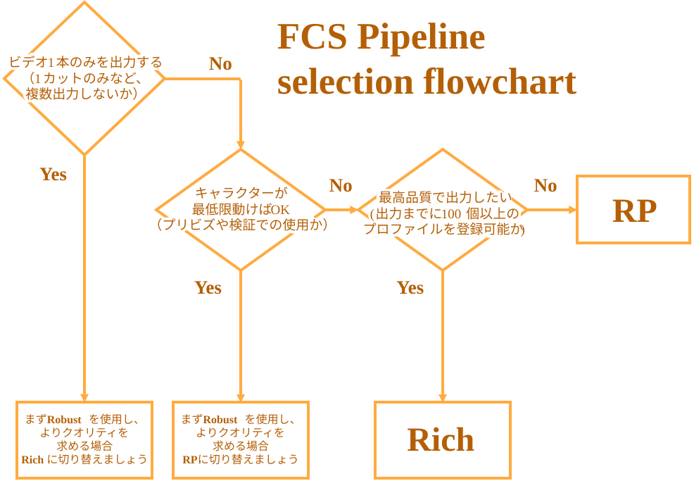

パイプラインの比較
FCSにはビデオを処理するための複数のアルゴリズム (パイプライン) がパッケージ化されています。
各パイプラインは、さまざまな異なる使用状況を想定し設計されています。どのパイプラインを使用すべきかの判断材料として、下記のフローチャートをご使用ください
目次
どのパイプラインを使用すべきか フローチャート

パイプライン一覧
パイプラインについて詳細を知りたい方へ
現在、Rich、Robust、RPの3つのパイプラインを正式に提供しています。
FCS 25.04まではRichが、FCS 25.07からはRPがデフォルトのパイプラインとなっています。
また、FCS 25.10からは、RP+、Robust+の2つの実験的なパイプラインを実装しました。
Rich
このパイプラインは、大量のプロファイル（100個以上）を登録すると、キャラクターの微細な動きがよりよく反映される傾向があります。
通常、大規模なプロジェクト（長編映画、ゲーム）で、ハイクオリティなアニメーションが必要な場合には、最適な選択肢となります。RP
RPパイプラインは、カメラや画角のズレに対する安定性を高めることでRichのより手間のかからない代替手段として機能します。
これにより必要なプロファイル数を減らすことができますが、その代わりに、微細な顔の動きが反映されにくくなります。Robust
このパイプラインは頭部の回転（横を向いてしまった場合など）への適応性が高くなりますが、アニメーションの精度は低くなります。
プロファイル数がとても少ない場合（10未満）により効果的に機能するように設計されています。
また、公式にはサポートされていませんが、アクターが交代する場合（1つのセッションに複数アクターの映像が含まれている場合）、このパイプラインは他の2つよりも優れた性能を発揮します。RP+ and Robust+
これらのパイプラインは、RP・Robustパイプラインをそれぞれベースとして、ツークン研究所で開発された新しい顔ランドマークトラッカーを使用しています。
これらの新しいパイプラインは実験的なものであり、今後変更される可能性があります。
状況に応じた最適なパイプラインを選択することで、作業負荷の軽減とクオリティの向上を図ることができます。
プロジェクトの進行中にいつでもパイプラインを変更できます。
ビデオを処理する際に『reprocess』にチェックを入れるだけで確認できますので、ぜひ様々なパイプラインを試してみて、最適なものを見つけてください。
検証詳細
さまざまなパイプラインの特長を示すために、FCSを使用してプロファイルを作成する際に想定される4つの条件・状況で検証しました。
Baseline Only
Process videos using only the 50 baseline ROM profiles.
This scenario recreates the standard procedure of creating facial animation with minimal effort.Baseline + Video Profile 10
Process videos using the 50 ROM profiles and the 10 profiles picked up from within the video.
This scenario shows how the animation quality tends to improve by adding more profiles from the video.Video Profile 10 Only
Process videos using only the 10 profiles picked up from within the video.
This scenario shows the performance of the pipelines if you skip creating the baseline ROM profiles.Another Actor
Process videos of another actor using only the 50 ROM profiles.
This scenario simulate when the person that you created the profiles for is a different one than the one that you would like to process videos of (due to actor change etc.). This is not a supported use-case but we still provide a reference in case you are curious.
動画ギャラリー
Baseline Only
パイプラインの比較動画 |
|---|
Baseline + Video Profile 10
パイプラインの比較動画 |
|---|
Video Profile 10 Only
パイプラインの比較動画 |
|---|
Another Actor
演技動画 |
Rich |
Robust |
RP |
RPP |
RobustP |
|---|---|---|---|---|---|
結論
処理しようとしているビデオ内から多くのプロファイルを作成できる、または多数のビデオ (複数日の撮影など) にわたって大量のプロファイルを作成できる場合、3 つのパイプラインの中で Rich を使用すると最も優れたアニメーションが出力できる傾向があります。
ただし、処理するビデオ内からプロファイルを作成できない場合（時間的制約などにより）、Robust と RP を使用するとより良い結果が得られます。
プロファイル数が少ない場合（10未満）、多くの場合はRobustが最適な選択肢となります。
プロファイル数が増えるにつれて、RichとRPがより効果的になります。
また、他のアクターの動画を処理する場合には、「Robust」を選択することで他2つと比べてアニメーションが破綻しにくくなります。